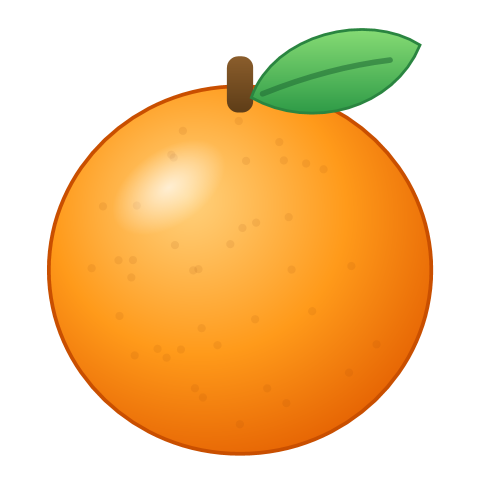

탐색기에서 파일을 끌어오는 도중 Shift 를 누르면 커서 아래에 귤 조각 메뉴가 뜹니다. 원하는 조각 위에 놓으면 원본 옆에 새 파일이 생깁니다.

탐색기나 바탕화면에서 파일·폴더를 마우스로 잡아 끌어옵니다. 여러 개도 됩니다.
끌어오는 도중에 누르면 커서 아래에 귤 조각 메뉴가 뜹니다.
마우스가 올라간 조각이 열화상 색으로 바뀝니다. 가운데·바깥에 놓거나 Esc 면 취소.
끌어온 파일이 모두 바뀔 수 있는 형식만 나옵니다. 마지막 두 조각은 늘 ZIP → 경로 복사입니다.
| 끌어온 것 | 메뉴에 나오는 조각 |
|---|---|
| 사진 1개 (PNG·SVG 등) | JPGWEBPAVIFGIFBMPTIFFICOPDFZIP경로 |
| 영상 | MP4MOVMKVWEBMAVIGIF 움짤MP3 소리만WAV 소리만M4A 소리만ZIP경로 |
| 한글·Word·TXT | PDFZIP경로 |
| 엑셀 (XLS·XLSX) | PDFCSV 시트마다ZIP경로 |
| CSV | XLSXZIP경로 |
| 발표 (PPT·PPTX) | PDFJPG 장마다PNG 장마다ZIP경로 |
| 자막 (SRT·VTT) | VTT 또는 SRTTXT 대사만ZIP경로 |
| PDF 1개 | 나누기JPG 쪽마다PNG 쪽마다ZIP경로 |
| PDF 2개 이상 | 합치기나누기JPG 쪽마다PNG 쪽마다ZIP경로 |
| 폴더, 또는 종류가 섞인 파일 | ZIP경로 |
| 원본 | 바꿀 수 있는 형식 | 엔진 |
|---|---|---|
| 이미지 JPG·JPEG, PNG, WEBP, HEIC, AVIF, GIF, BMP, TIFF·TIF, ICO, SVG | JPG, PNG, WEBP, AVIF, GIF, BMP, TIFF, ICO(여러 크기), PDF | Magick.NET |
| GIF (위에 더해) | MP4, WEBM | ffmpeg |
| 영상 MP4, MOV, M4V, MKV, AVI, WEBM, WMV, FLV, MPG, 3GP, TS, MTS·M2TS | MP4, MOV, MKV, WEBM, AVI, GIF(움짤), MP3·WAV·M4A(소리만) | ffmpeg |
| 오디오 MP3, WAV, M4A, AAC, FLAC, OGG, OPUS, WMA, AIFF | MP3, WAV, M4A, FLAC, OGG, OPUS, AIFF | ffmpeg |
| 한글 문서 HWP, HWPX | 설치된 한글 | |
| Word·메모장 DOC, DOCX, TXT | 설치된 Word | |
| 엑셀 XLS, XLSX | PDF, CSV (시트마다, UTF-8) | 설치된 Excel |
| CSV | XLSX | 설치된 Excel |
| 발표 PPT, PPTX | PDF, JPG·PNG (장마다 300dpi) | 설치된 PowerPoint |
| 자막 SRT, VTT | SRT, VTT, TXT (대사만) | 탠저린 자체 |
| 나누기 (쪽마다 PDF), JPG·PNG (쪽마다 300dpi) | PDFsharp / Windows PDF 렌더러 | |
| PDF 여러 개 | 합치기 (PDF 하나로) | PDFsharp |
| 무엇이든 | ZIP (끌어온 것을 모두 묶어 하나로) | 반디집, 없으면 Windows 기본 ZIP |
| 무엇이든 | 경로 복사 (전체 경로를 한 줄에 하나씩 클립보드로) | 탠저린 자체 |
늘 원본과 같은 폴더에 새로 만들고, 원본은 건드리지 않습니다. 같은 이름이 있으면 사진 (1).jpg 처럼 번호를 붙입니다.
| 작업 | 원본 | 결과 이름 |
|---|---|---|
| 형식 바꾸기 | 사진.png | 사진.jpg |
| PDF → 그림 | 도면.pdf (3쪽) | 도면 1쪽.jpg 도면 2쪽.jpg 도면 3쪽.jpg 1쪽짜리는 도면.jpg |
| PDF 나누기 | 보고서.pdf (3쪽) | 보고서 1쪽.pdf … 보고서 3쪽.pdf 1쪽짜리는 건너뜀 |
| PDF 합치기 | 표지.pdf → 본문.pdf → 부록.pdf 순서로 선택 | 표지 외 2개.pdf 선택한 순서대로 합침. 처음 고른 파일을 잡고 끌어오기 |
| 발표 → 그림 | 발표.pptx (3장) | 발표 1장.jpg … 발표 3장.jpg |
| 엑셀 → CSV | 매출.xlsx (시트 2개) | 매출 1월 매출.csv 매출 요약.csv 시트가 하나면 매출.csv |
| 압축 | 파일 1개 / 여러 개 | 그이름.zip / 들어있던폴더.zip |
| 경로 복사 | 파일·폴더 여러 개 | 파일을 만들지 않고 클립보드에 경로를 한 줄에 하나씩 |
관리자 권한으로 실행한 프로그램에서 끌어 온 파일은 Windows 보안 정책 때문에 받을 수 없습니다. 반디집으로 만든 ZIP 은 파일 이름이 CP949 라 맥에서 풀면 한글 이름이 깨질 수 있습니다.